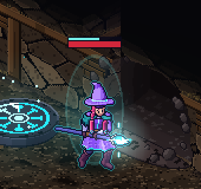
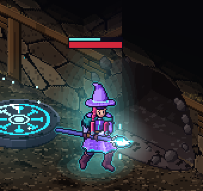
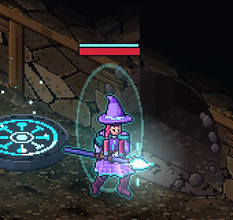
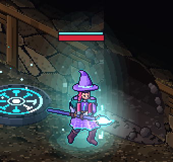
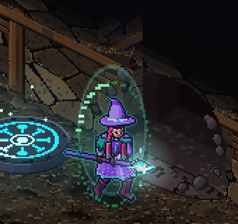
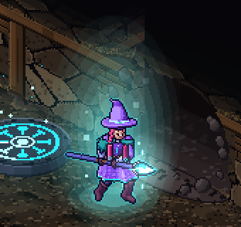
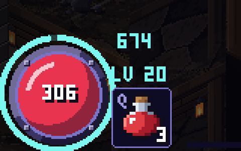
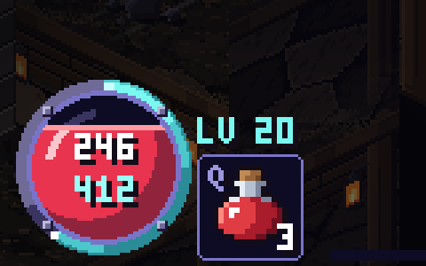
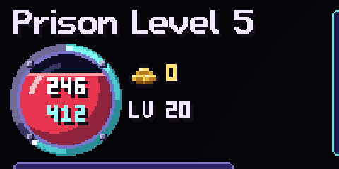
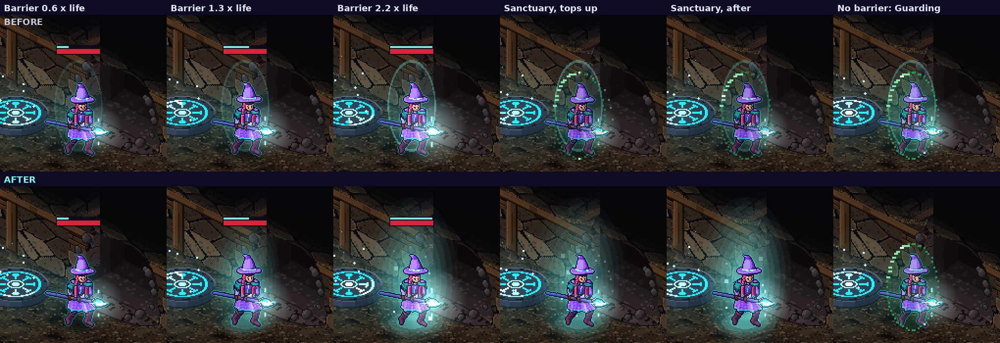

Your words: “I need barrier changed. Not the same shape as Guardian, so people just have 2 bubble shields on them for no reason. So I don't think there needs to be anything if you have barrier. It's around your health globe in the corner of the screen. But I do think that once barrier, the amount of barrier you have exceeds your health pool, you get like a blue glow around your character. And then once it's like double your health, you get something else.”
A yes to this look, or what to change. Nothing here is in the game until you say yes.


Left before: the bubble. Right after: a soft cyan glow.


Right: brighter and wider, with motes of light rising.


Left: two bubbles. Right: none, just the glow from her barrier.

Your words: “can you make it look nicer in the UI around the life globe? It behind the potion widget and overlapping the player level”. Left before: the ring stood out past the globe, under the potion, and its number sat on your level. Right after: the globe's own iron band lights up cyan, and the barrier number sits inside the globe under your life.


The band lights only as far as your barrier is full, with a spark at its end; the rest stays iron. On a phone the globe sits at the top, just as tidy.
